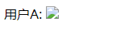
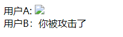

跨站请求伪造
跨站请求伪造，英文名称Cross Site Request Forgery，缩写CSRF。
CSRF也是常见的WEB攻击之一，CSRF攻击，简单地说，是攻击者通过一些技术手段欺骗用户的浏览器去访问一个自己曾经认证过的网站并运行一些操作（如发邮件，发消息，甚至财产操作如转账和购买商品）。由于浏览器曾经认证过，所以被访问的网站会认为是真正的用户操作而去运行。这利用了web中用户身份验证的一个漏洞：简单的身份验证只能保证请求发自某个用户的浏览器，却不能保证请求本身是用户自愿发出的。
举个例子，假如博客网站http://www.blog.com需要用户登录后才能进行留言操作并且会保留留言历史，用户登录时后台发送一个cookie至浏览器，用以保持会话状态识别用户信息。
假设用户留言功能通过以下接口实现:
http://www.blog.com/articlId/msg?text=留言信息
假设有一个用A户在某篇文章中写下了如下留言：
<img src="http://www.blog.com/articlId/msg?text=你被攻击了"/>
该条留言本身也属于XSS攻击，所以这里假设该博客网站未对<img>标签进行过滤，该文章下就会存在一条像下面这样的留言:

然后另一个用户B访问此文章时，间接地通过请求图片，请求了留言接口，假如此时用户B已经登录过该博客网站并且cookie信息还没过期，因为请求会自动携带cookie信息的原因，所以此请求就会被认为是当前用户B发出的，相当于间接地操控了当前用户B的留言权限，在文章下留下了”你被攻击了”这样的留言并且产生了留言历史。

上面就是大概的CSRF攻击过程，伪造的意思就是设法获取用户的令牌，如cookie、token、sessionid等信息创建请求，欺骗服务器以通过身份验证。
但是上面是同一个站点下发生的攻击，并没有跨站。下面来看一下跨站攻击的情况，同样是上述的博客网站，用户B登录了该博客网站http://www.blog.com并且在浏览器中留下了cookie信息，然后在cookie有效期内访问用户A创建的一个恶意网站http://www.csrf.com，该网站在被访问时就马上发出如下请求：
"http://www.blog.com/articlId/msg?text=你被攻击了"
由于用户A上存有http://www.blog.com的cookie信息，因此请求头上会自动携带此cookie信息，从而使请求成功骗过服务器被执行，在`articlId`文章中留下了留言并产生了留言历史。
加入上述使银行转账操作的话，用户B的损失就相当严重了。所以防御CSRF攻击也是非常有必要的。
浏览器的cookie策略
上述的攻击之所以会成功，主要是因为攻击者伪造的请求通过携带本地cookie通过了服务器的验证。
浏览器的cookie主要分为两种：会话期Cookie、持久性Cookie。
会话期Cookie又称为”Session Cookie”、”临时Cookie”，会话期Cookie是最简单的Cookie：浏览器关闭之后它会被自动删除，也就是说它仅在会话期内有效。会话期Cookie不需要指定过期时间（Expires）或者有效期（Max-Age）。
持久性Cookie又称为”本地Cookie”、”第三方Cookie”，和关闭浏览器便失效的会话期Cookie不同，持久性Cookie可以指定一个特定的过期时间（Expires）或有效期（Max-Age），关闭页面时仍然保存在浏览器之中直至过期。
可以这样认为，会话期Cookie存储在浏览器进程的运行内存之中，而持久性Cookie则存储在本地中。所以上述的攻击主要发生在持久性Cookie上。
CSRF防御工程
在当前站点通过<img>、<iframe>、<script>、<link>等标签加载其它站点的资源，大部分现代浏览器会默认禁止发送第三方Cookie，在某种程度上降低了CSRF的攻击威力，但是这种情况在P3P header出来之后又变得复杂起来。
P3P Header
P3P 全称Platform for Privacy Preferences，隐私权偏好选项平台，是W3C公布的一项隐私保护推荐标准，目前大部分现代浏览器都支持该标准。
如果网站返回的HTTP头中包含有P3P头，则会在某种程度上允许浏览器发送第三方cookie，也不会拦截<iframe>、<script>等标签的cookie发送，甚至可以跨域设置cookie。
简单地举个例子，假如页面a中有一个iframe，跨域请求页面b下的test.php，test.php的内容是给页面a设置来自b域的cookie：
<? php
header("Set-Cookie: test=axis; domain=.b.com; path=/");
?>
一般情况下由于跨域原因是无法生效的，但是当text.php做出如下修改：
<? php
header("P3P: CP=IDC DSP COR CURa ADMa OUR IND PHY ONL COM STA");
header("Set-Cookie: test=axis; domain=.a.com; path=/");
?>
P3P头允许跨域访问隐私数据，从而可以跨域Set-Cookie成功，并且往后的请求中都可以携带cookie信息。
P3P头的本意是为了解决需要跨域访页面的问题，例如广告投放。但是不可否认的是，P3P头设置后，将会对整个域造成影响，造成意料之外的其它允许发送第三方cookie的情况。所以使用P3P头时需要慎重考虑。
想要了解更多关于P3P的信息，点击这里。
验证码
验证码被认为是对抗CSRF攻击最简洁而有效的防御方法。CSRF攻击的过程，往往是在用户不知情的情况下构造了网络请求。而验证码，则强制用户必须与应用进行交互，才能完成最终请求。因此在通常情况下，验证码能够很好地遏制CSRF攻击。但是验证码并非万能。很多时候，出于用户体验考虑，网站不能给所有的操作都加上验证码。因此，验证码只能作为防御CSRF的一种辅助手段，而不能作为最主要的解决方案。
检查Referer
Referer是HTTP Header的一部分，当浏览器向web服务器发送请求的时候，一般会带上Referer，告诉服务器该请求是从哪个页面发送过来的。因此，我们可以利用这个特性检测当前请求是否来源于正确页面的请求，例如登录请求必定来源于登录页面，若不是，则很有可能是CSRF攻击。不过，不是所有情况都会携带Referer信息，有时候用户会处于隐私考虑而关闭Referer的发送。
Anti CSRF Token
CSRF攻击的本质是，重要操作的所有参数都是可以被攻击者猜测到的。攻击者只有预测出URL的所有参数与参数值，才能成功地构造一个伪造的请求；反之，攻击者将无法攻击成功。因此，我们可以使用随机参数来增加攻击者的猜测难度。比如我们删除一篇文章的请求是：
http://www.a.com/delete?username=zhangsan&id=123
像这样的简单的请求，会被攻击者轻易猜到。但是我们增加一个参数Token，这个Token值是高度随机、难以猜测的，像下面这样：
http://www.a.com/delete?username=zhangsan&id=123&Token=[random(seed)]
Token的参数值，在服务器中处于必要验证的位置，若与服务器存在的Token值不一致，则请求失败。这就是Anti CSRF Token，这个方案的要点是，Token必须足够随机，并且保密，只能被用户和服务端持有，不能被第三者知晓。
Token可以储存在用户的Session中，或者浏览器的Cookie中。
Same Site
Chrome 51 开始，浏览器的 Cookie 新增加了一个SameSite属性，用来防止CSRF攻击和用户追踪，这个属性主要用来限制第三方Cookie，从而减少安全风险。它可以设置三个值：
- Strict
- Lax
- None
Strict最为严格，完全禁止第三方 Cookie，跨站点时，任何情况下都不会发送 Cookie。换言之，只有当前网页的 URL 与请求目标一致，才会带上 Cookie。
Set-Cookie: CookieName=CookieValue; SameSite=Strict;
这个规则过于严格，可能造成非常不好的用户体验。比如，当前网页有一个 GitHub 链接，用户点击跳转就不会带有 GitHub 的 Cookie，跳转过去总是未登陆状态。
Lax规则稍稍放宽，大多数情况也是不发送第三方 Cookie，但是导航到目标网址的 Get 请求除外。
Set-Cookie: CookieName=CookieValue; SameSite=Lax;
导航到目标网址的 GET 请求，只包括三种情况：链接，预加载请求，GET 表单。详见下表。
| 请求类型 | 示例 | 正常情况 | Lax |
|---|---|---|---|
| 链接 | <a href="..."></a> |
发送 Cookie | 发送 Cookie |
| 预加载 | <link rel="prerender" href="..."/> |
发送 Cookie | 发送 Cookie |
| GET 表单 | <form method="GET" action="..."> |
发送 Cookie | 发送 Cookie |
| POST 表单 | <form method="POST" action="..."> |
发送 Cookie | 不发送 |
| iframe | <iframe src="..."></iframe> |
发送 Cookie | 不发送 |
| AJAX | $.get("...") |
发送 Cookie | 不发送 |
| Image | <img src="..."> |
发送 Cookie | 不发送 |
设置了Strict或Lax以后，基本就杜绝了 CSRF 攻击。当然，前提是用户浏览器支持 SameSite 属性。
Chrome 计划将Lax变为默认设置。这时，网站可以选择显式关闭SameSite属性，将其设为None。不过，前提是必须同时设置Secure属性（Cookie 只能通过 HTTPS 协议发送），否则无效。
下面的设置无效。
Set-Cookie: widget_session=abc123; SameSite=None
下面的设置有效。
Set-Cookie: widget_session=abc123; SameSite=None; Secure